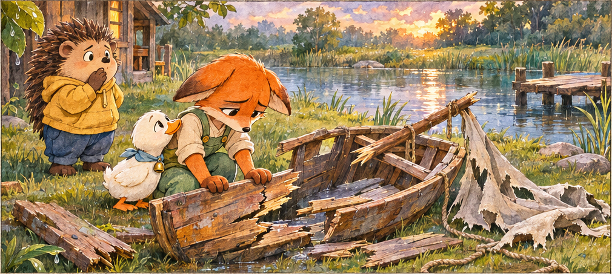

Wreckage
만화 장면과 함께 듣는 영한 설명 ·
Qwen · Ono_Anna / 정상 속도로 녹음한 후 영어 청크 사이에 Whisper 단어 시간으로 경계를 맞춰 0.5초 쉼을 추가했습니다. (수정 2판)버튼을 누르면 처음부터 이어서 재생합니다.

만화 장면과 함께 듣는 영한 설명 ·
Qwen · Ono_Anna / 정상 속도로 녹음한 후 영어 청크 사이에 Whisper 단어 시간으로 경계를 맞춰 0.5초 쉼을 추가했습니다. (수정 2판)